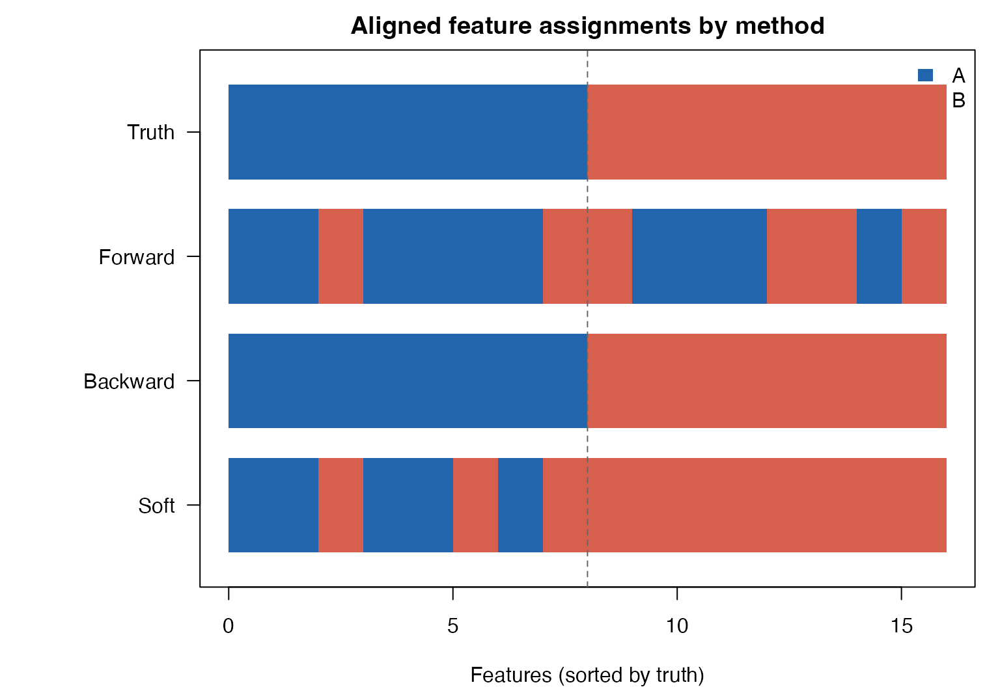
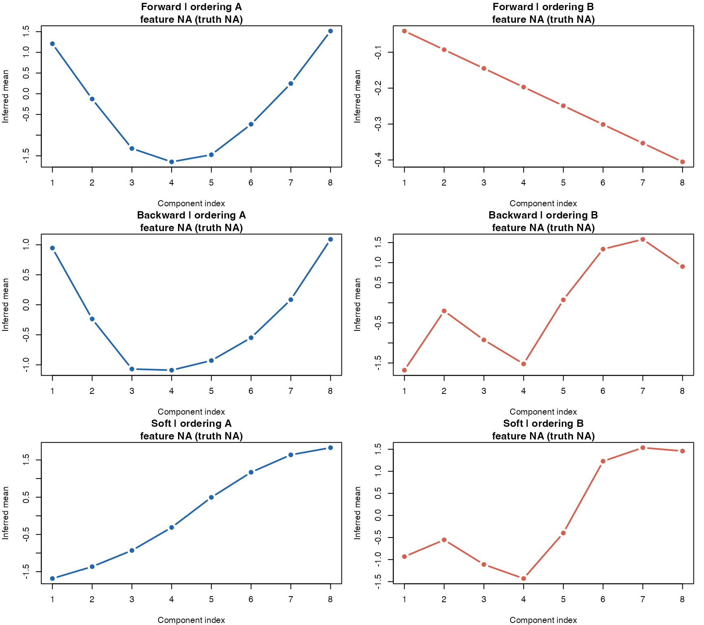
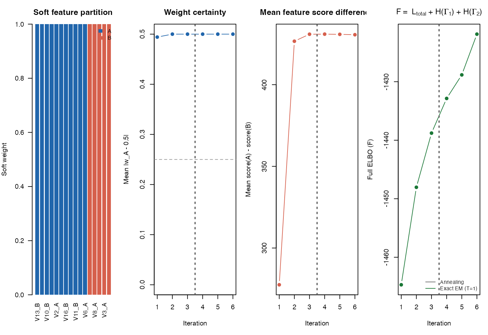

Comparing Forward, Backward, and Soft Dual-Ordering Methods
dual_ordering_method_comparison.RmdThis vignette compares the three dual-ordering utilities on the same simulated dataset:
forward_two_ordering_partition_csmooth()backward_two_ordering_partition_csmooth()soft_two_trajectory_EM()
The goal is simple: when different subsets of features follow different latent sample orderings, how well does each method separate those two systems, and what do the inferred trajectories look like?
These three functions are retained as legacy csmooth_em
benchmarks. For new work, the recommended entry points are
soft_two_trajectory_cavi() and
fit_mpcurve(..., greedy = "forward"/"backward") under the
unified soft-CAVI framework.
1 Simulate two ordering systems
We simulate two signal blocks with no extra noise features so the comparison focuses on distinguishing the two orderings themselves.
sim <- simulate_dual_trajectory(
n = 100,
d1 = 8,
d2 = 8,
d_noise = 0,
sigma = 0.15,
crossing = FALSE,
seed = 42
)
X <- sim$X
truth <- sim$true_assign
cat("Data dimensions:", nrow(X), "samples x", ncol(X), "features\n")
#> Data dimensions: 100 samples x 16 features
print(table(truth))
#> truth
#> A B
#> 8 82 Fit all three methods
We keep the tuning light so the vignette runs quickly, while still producing a clear separation on this simulated example.
res_forward <- forward_two_ordering_partition_csmooth(
X,
K = 8,
score_mode = "ml",
greedy_em_refine = TRUE,
greedy_em_max_iter = 1,
verbose = 0
)
res_backward <- backward_two_ordering_partition_csmooth(
X,
K = 8,
init_method1 = "PCA",
score_mode = "ml",
warm_iter_init = 2,
warm_iter_refit = 1,
max_steps = 8,
verbose = FALSE
)
res_soft <- soft_two_trajectory_EM(
X,
init_method1 = "PCA",
K = 8,
n_outer = 3,
inner_iter = 1,
max_converge_iter = 3,
verbose = FALSE
)3 Helper functions for comparison
align_two_group_assign <- function(assign, truth) {
raw <- if (is.numeric(assign)) {
ifelse(as.integer(assign) == 1L, "A", "B")
} else {
as.character(assign)
}
direct_acc <- mean(raw == truth)
flipped_raw <- ifelse(raw == "A", "B", "A")
flipped_acc <- mean(flipped_raw == truth)
if (direct_acc >= flipped_acc) {
list(
labels = raw,
accuracy = direct_acc,
alignment = "direct",
fit_for_truth = c(A = 1L, B = 2L)
)
} else {
list(
labels = flipped_raw,
accuracy = flipped_acc,
alignment = "flipped",
fit_for_truth = c(A = 2L, B = 1L)
)
}
}
extract_mu_curve <- function(fit, global_feature, feature_map = NULL) {
pos <- if (is.null(feature_map)) global_feature else match(global_feature, feature_map)
if (is.na(pos)) {
return(rep(NA_real_, length(fit$params$mu)))
}
vapply(fit$params$mu, function(mu_k) as.numeric(mu_k[pos]), numeric(1))
}
pick_rep_feature <- function(X, aligned_labels, truth, target, score = NULL) {
cand <- which(aligned_labels == target & truth == target)
if (!length(cand)) cand <- which(aligned_labels == target)
if (!length(cand)) cand <- which(truth == target)
if (!length(cand)) stop("No candidate features found for target ", target)
if (!is.null(score)) {
cand[which.max(score[cand])]
} else {
vars <- apply(X[, cand, drop = FALSE], 2, var)
cand[which.max(vars)]
}
}
build_method_view <- function(name, assign_raw, fit1, fit2, map1, map2, X, truth, score_by_group = NULL) {
aligned <- align_two_group_assign(assign_raw, truth)
rep_A <- pick_rep_feature(
X, aligned$labels, truth, "A",
score = if (!is.null(score_by_group)) score_by_group[, "A"] else NULL
)
rep_B <- pick_rep_feature(
X, aligned$labels, truth, "B",
score = if (!is.null(score_by_group)) score_by_group[, "B"] else NULL
)
fitA <- if (aligned$fit_for_truth["A"] == 1L) fit1 else fit2
fitB <- if (aligned$fit_for_truth["B"] == 1L) fit1 else fit2
mapA <- if (aligned$fit_for_truth["A"] == 1L) map1 else map2
mapB <- if (aligned$fit_for_truth["B"] == 1L) map1 else map2
list(
name = name,
labels = aligned$labels,
accuracy = aligned$accuracy,
alignment = aligned$alignment,
rep_features = c(A = rep_A, B = rep_B),
rep_truth = c(A = truth[rep_A], B = truth[rep_B]),
curves = list(
A = extract_mu_curve(fitA, rep_A, mapA),
B = extract_mu_curve(fitB, rep_B, mapB)
)
)
}
plot_assignment_rows <- function(truth, method_views) {
ord <- order(truth)
row_labels <- c("Truth", vapply(method_views, `[[`, character(1), "name"))
row_values <- c(
list(truth[ord]),
lapply(method_views, function(mv) mv$labels[ord])
)
cols <- c(A = "#2166AC", B = "#D6604D")
op <- par(no.readonly = TRUE)
on.exit(par(op), add = TRUE)
par(mar = c(4, 8, 2, 1))
plot(c(0, length(ord)), c(0.5, length(row_values) + 0.5),
type = "n", xaxt = "n", yaxt = "n",
xlab = "Features (sorted by truth)", ylab = "",
main = "Aligned feature assignments by method")
for (r in seq_along(row_values)) {
y <- length(row_values) - r + 1
vals <- row_values[[r]]
for (i in seq_along(vals)) {
rect(i - 1, y - 0.38, i, y + 0.38, col = cols[vals[i]], border = NA)
}
}
axis(2, at = rev(seq_along(row_values)), labels = row_labels, las = 1)
axis(1)
abline(v = sum(truth == "A"), lty = 2, col = "grey40")
legend("topright", legend = names(cols), fill = cols, border = NA, bty = "n")
}
plot_representative_trajectories <- function(method_views, feature_names) {
op <- par(no.readonly = TRUE)
on.exit(par(op), add = TRUE)
par(mfrow = c(length(method_views), 2), mar = c(4, 4, 2.5, 1))
cols <- c(A = "#2166AC", B = "#D6604D")
for (mv in method_views) {
for (target in c("A", "B")) {
curve <- mv$curves[[target]]
plot(seq_along(curve), curve,
type = "b", pch = 19, cex = 0.8,
col = cols[target], lwd = 2,
xlab = "Component index",
ylab = "Inferred mean",
main = sprintf(
"%s | ordering %s\nfeature %s (truth %s)",
mv$name,
target,
feature_names[mv$rep_features[target]],
mv$rep_truth[target]
))
}
}
}4 Align labels and summarize accuracy
The A/B labels are arbitrary for all three methods, so we align them to the truth by the better of the direct and flipped mappings.
view_forward <- build_method_view(
name = "Forward",
assign_raw = res_forward$coord_assign,
fit1 = res_forward$fit1,
fit2 = res_forward$fit2,
map1 = res_forward$J1,
map2 = res_forward$J2,
X = X,
truth = truth
)
view_backward <- build_method_view(
name = "Backward",
assign_raw = res_backward$assign,
fit1 = res_backward$fit1,
fit2 = res_backward$fit2,
map1 = res_backward$J1,
map2 = res_backward$J2,
X = X,
truth = truth
)
view_soft <- build_method_view(
name = "Soft",
assign_raw = res_soft$assign,
fit1 = res_soft$fit1,
fit2 = res_soft$fit2,
map1 = seq_len(ncol(X)),
map2 = seq_len(ncol(X)),
X = X,
truth = truth,
score_by_group = res_soft$pi_weights
)
method_views <- list(view_forward, view_backward, view_soft)
comparison_df <- data.frame(
method = vapply(method_views, `[[`, character(1), "name"),
accuracy = round(vapply(method_views, `[[`, numeric(1), "accuracy"), 4),
alignment = vapply(method_views, `[[`, character(1), "alignment"),
n_assigned_A = vapply(method_views, function(x) sum(x$labels == "A"), integer(1)),
n_assigned_B = vapply(method_views, function(x) sum(x$labels == "B"), integer(1))
)
comparison_df
#> method accuracy alignment n_assigned_A n_assigned_B
#> 1 Forward 0.6250 flipped 10 6
#> 2 Backward 1.0000 flipped 8 8
#> 3 Soft 0.8125 flipped 5 11On this simulated example, all three methods detect the existence of two ordering systems, but they separate the feature groups with different accuracy.
5 Visual comparison of inferred feature partitions
In the next plot, features are sorted by the true group so the vertical dashed line marks the true A/B boundary.
plot_assignment_rows(truth, method_views)
True and inferred feature partitions after label alignment.
6 Representative inferred trajectories from each ordering
For each method, we choose:
- one representative feature assigned to ordering A
- one representative feature assigned to ordering B
We then plot that method’s inferred component-mean trajectory for the chosen feature under the corresponding ordering-specific fit.
rep_df <- do.call(
rbind,
lapply(method_views, function(mv) {
data.frame(
method = mv$name,
ordering = c("A", "B"),
feature = colnames(X)[mv$rep_features],
truth = mv$rep_truth,
stringsAsFactors = FALSE
)
})
)
rep_df
#> method ordering feature truth
#> A.A3 Forward A V3 A
#> B.B5 Forward B V13 B
#> A.A7 Backward A V7 A
#> B.B1 Backward B V9 B
#> A.A1 Soft A V1 A
#> B.B51 Soft B V13 B
plot_representative_trajectories(method_views, colnames(X))
Representative inferred mean trajectories for each ordering, using each method.
These curves are not raw observed features; they are the inferred component means along the ordering learned by each method. Taken together, the six panels show how each algorithm encodes the two latent systems.
7 Soft weights for the CAVI method
The soft method also gives feature-level uncertainty, which the greedy methods do not expose directly.
soft_summary <- summarise_soft_partition(res_soft)
soft_summary$truth <- truth
head(soft_summary[order(soft_summary$truth, -soft_summary$A), ], 8)
#> feature A B assign entropy truth
#> 6 V6 1 0 A 0 A
#> 9 V9 1 0 A 0 A
#> 16 V16 1 0 A 0 A
#> 2 V2 0 1 B 0 A
#> 3 V3 0 1 B 0 A
#> 7 V7 0 1 B 0 A
#> 8 V8 0 1 B 0 A
#> 13 V13 0 1 B 0 A
plot_soft_weights(
res_soft,
feature_names = paste0(colnames(X), "_", truth),
sort_by_weight = TRUE
)
Soft feature weights and convergence diagnostics for the CAVI method.
8 Takeaway
On this simulated example:
- all three methods detect that a single global ordering is not enough,
-
forwardandsoftseparate the two ordering systems especially clearly, -
soft_two_trajectory_EM()adds uncertainty estimates through feature weights, - the representative inferred trajectories make the two learned orderings easy to inspect directly.
This kind of side-by-side comparison is useful when you want to decide whether the extra flexibility of the soft method is worth it for your data, or whether a greedy hard partition is already sufficient.